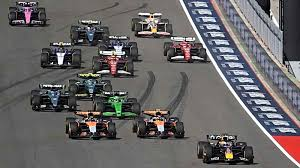

Monaco Grand Prix MN
The most iconic street race in Formula 1, known for tight corners and luxury surroundings.
Date:
Formula 1 (F1) is the highest class of international, single-seater auto racing, often considered the pinnacle of motorsport. It features 10 teams and 22 drivers competing in 24 Grand Prix races globally (as of 2026), with cars exceeding 370kph (230mph). The sport combines cutting-edge, high-efficiency hybrid technology with extreme driver skill. 300 km/h.
There are 10 teams and 20 drivers in the current grid.

| Driver | Teams | Standings |
|---|---|---|
| Max Verstappen | Red bull | 1 |
| Lando Norris | McLaren | 2 |
| Charles Leclerc | Ferrari | 3 |
| Lewis Hamilton | Ferrari | 4 |
| George Russell | Mercedes | 5 |
| Fernando Alonso | Aston - Martin | 6 |
| Oscar Piastri | McLaren | 7 |
| Carlos Sainz | Williams | 8 |
| Pierre Gasly | Alpine | 9 |
| Yuki Tsunoda | RedBull | 10 |
| Team | Points |
|---|---|
| Red Bull | 1 |
| McLaren | 2 |
| Ferrari | 3 |
3 kgin a race.
The most iconic street race in Formula 1, known for tight corners and luxury surroundings.
Date:
Held at Silverstone, one of the fastest and most historic tracks in F1.
Date:
Suzuka Circuit is famous for its figure-8 layout and passionate fans.
Date:
Next race:
CO2 emissions
Lap time record: 1:20.123
"We are checking." — Ferrari
Country: Monaco
Circuit de Monaco,Country: UK
Silverstone Circuit,Country: JP
Suzuka Circuit,


|

|

|

|
"To finish first, first you must finish." — Ayrton Senna
"We are checking." — Ferrari Radio
"Box, box, box!"— Team Radio"Leave me alone, I know what I'm doing." — Kimi Räikkönen
"Smile, because it happened." — Daniel Ricciardo
"If you no longer go for a gap… you are no longer a racing driver." — Ayrton Senna